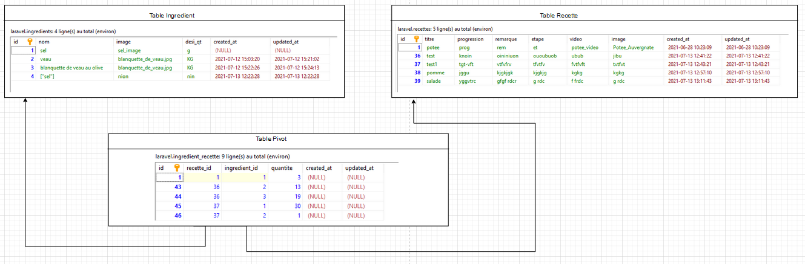
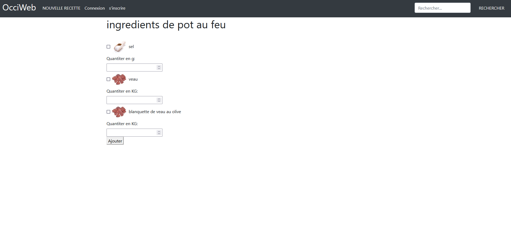
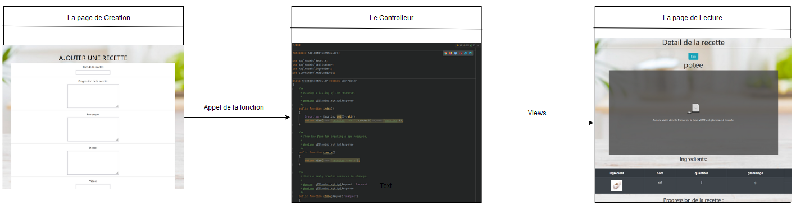
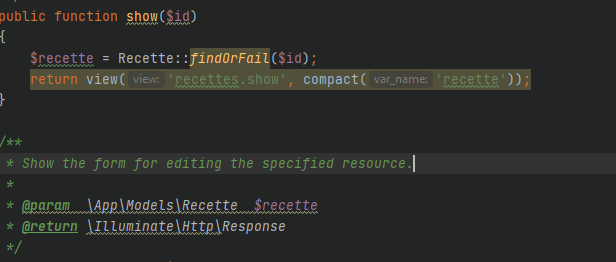

Articles et Posts
"Un bon journaliste ne lit qu'un journal, le sien, et dans ce journal, il ne lit qu'un article, le sien."
~Emile de Girardin
Mon stage à Occiweb
Du 07 juin au 16 juillet, j'ai effectué un stage à Occiweb, une web radio de la region de toulouse. Nous étions une équipe de 4 pour notre projet : Michael Levesque, Nicolas Guitay, Enzo Pistre et moi même. Durant le stage, j'ai rencontré le tresorier ,Eric Simon, et le trésorier adjoint, Stephane, ainsi de d'autres stagiaires d'autres écoles pour différents projets. Lors de notre entretient de stage nous avions mis au clair un cahier des charges et des directives pour notre projet qui consistais à mettre en place un nouveau site pour Occiweb. Ainsi, pendant 6 semaines, nous avons travaillé sur la conception du site. Tous les lundis, nous faisions un point avec le tuteur de stage sur les objectifs de la semaine et les avancés. Tout cela m'a permis de découvrir à la fois le travail en entreprise, mais aussi le monde de la radio et des podcasts. J'ai pu developper mes competences en HTML et mes softs skill de groupes. Ce stage a été pour moi une agréable découverte avec d'excellents moments passés a la webradio. Merci à tous ,en espérant retravailler avec vous un jour.


Nos grandes difficultées du stage
Durant la conception du site web, nous avons dû créer une page contenant des recettes de cuisine. Une fois notre page de présentation des recettes terminées, Il a fallu créer la page de création de recette et c'est là que la première grande difficulté est apparue. L'architecture d'une recette se faisait comme ceci :  Une première table contenant les détails des recettes, une deuxième contenant la liste de tous les ingrédients et une table "pivots" pour lier les deux ensembles. À première vue pas de difficultés, nous avions déjà fait ça plusieurs fois durant nos cours. Enfin presque, nous n'avions jamais rajouté une liste de plusieurs objets, à chaque fois les ajouts se faisait après la création et seulement 1 par 1. Puis une deuxième difficulté est apparue pour ajouter des ingrédients dans la table "pivots" il faut que la recette soit déjà enregistrée dans la table des recettes donc impossible de créer la recette et y rajouter des ingrédients en même temps. Il a donc fallut réfléchir à une solution. Après de longues heures de tests infructueux, nous avions décidé de faire une pause et de réaliser un petit podcast sur les musiques et c'est alors qu'une idée m'est venu : pourquoi ne pas tout faire en même temps, mais enregistré en deux temps ? Et nous voilà repartis dans notre code. L'idée de découper en deux pages avait résolu notre problème d'enregistrements. Mais la troisième difficulté a fait son apparition, rajouter une quantité précise à chaque ingrédient dans la table "pivot". Heureusement pour nous une fonction existé déjà pour régler notre problème, après de nombreux tests pour comprendre le fonctionnement de cette fonction, nous l'avons implémenté avec succès dans le site.


Un bilan de mon stage à Occiweb
C'est ainsi, après 6 semaines notre stage, c'est achevé, cela a été pour moi une expérience incroyable, autant niveau travail qu'au niveau de l'équipe. De grands moments de fou rire, mais aussi de partage. Je voudrais remercier mon équipe de travail, mais aussi Eric et Stéphane pour nous avoir tout de suite mis dans le bain et avoir partagé toute cette bonne humeur, ça nous a permis de travailler dans de super conditions. J'ai beaucoup, que ce soit en termes de Hard Skills que de Soft Skills. J'ai pu explorer de nouvelles technologies en PHP/HTML, mais aussi perfectionner mon utilisation de ces languages. J'ai aussi pu découvrir et apprendre comment se dérouler les comptes-rendu hebdomadaires, le partage des information au sein de l'équipe et de travailler avec des personnes encore inconnu avant le début du stage. Bien sur ce stage a permis un certain rodage de notre travail d'équipe, nous as permis de trouver nos points fort et nos points faible et de voir qui pourrait nous aider et à l'inverse qui nous pourrions aider. Pour faire une brève phrase de bilan, j'ai pu grandir et découvrir une manière de travailler différente et cela m'a permis de progresser.
Une explication de Laravel
L'objectif était de réaliser un site web, pour cela nous avoir repartis le travail, je m'occupais de l'algorithmie du site, et le lien base de données/site.
nous avons donc utiliser Laravel, comment ça fonctionne ? Prenons pour exemple les recettes, premièrement il nous faudra un CRUD (Create/Read/Update/Remove).
Donc on crée notre page de création composée d'un formulaire à remplir. Puis notre page de lecture composée d'une boucle d'affichage des données. Pour relier tout ça, on utilise un controlleur (Un fichier contenant toute les fonctions lié a une table de données).

Reprenons notre exemple, nous avons donc notre page création, notre page lecture et notre fonction pour enregistrer les infos. Nous allons donc continuer avec la modification et pour ça, on recommence : une page modification, une fonction dans le contrôleur et retour sur la page de lecture. Je vous laisse deviné pour la suppression, même schéma.
Tout cela est possible, car Laravel integre une bibliotheque de lien predefinie et de fonction qui simplifi notre travail, il reste quand meme a notre charges de trier, recuperer et afficher les données. Voyons donc comment cela fonctionne en détails avec notre exemple, regardons de plus près la fonction :

On peut voir qu'elle contient la ligne "return view('recettes.show', compact('recette'));",on décortique un peu , "return" demande a notre page web d'aller quelque part, "view" indique de cela vas correspondre à un affichage,"(('recettes.show', compact('recette'))" maintenant voilà les données a afficher : la page show.blade.php compris dans le dossier recettes avec les paramètres "recette".
Les paramètres recette, mais c'est quoi ? Regardons la ligne juste au-dessus "$recette = Recette::findOrFail($id);", bien examinons la "$recette" est la variable avec pour nom recette qui contiendra toute les données utiles, "Recette" indique le type de données donc toutes les infos relatives (nom de la base de données, de la table, nom des infos,etc.), "findOrFail($id)" indique que nous allons chercher ou échouer toutes les données comportant la variable "$id"(l'identifiant de la recette).
Bien donc si je cherche la recette du poulet patates numéro 17 cela nous donnera "$recette = Recette::findOrFail(17);". Voilà comment fonctionne le contrôleur, chaque fonction réalise une action précise puis renvoie soit vers une autre fonction, soit vers une page a afficher. Revenons sur notre "Recette" avec un R majuscule, on a dit que c'était le type de données, mais on le défini où ? Bonne question, chaque données a un type different et pour cela on crée un model, ce model viendra calquer la table de données portant le meme nom.
Donc nos recettes ont donc un controlleur, un model, une table, et autant de views qu'ils nous faut de pages juste pour eux.
Mais ce n'est pas fini, toutes ces informations doivent circuler d'une page à une autre et sans ce mélanger avec les autres informations, Alors on va lui définir des routes.
 Prenons en exemple celle de nos recettes "Route::resource('recettes', 'App\Http\Controllers\RecetteController');". Bien examinons là,"Route::resource" on indique qu'ils s'agit d'une route de type ressource, "recettes" le nom de notre route (qui est aussi le nom du dossier contenant nos views) et pour finir "App\Http\Controllers\RecetteController" le chemin d'accès vers le controlleur qui contiendra nos fonctions.
C'est bon on as tout, une fois tout mis en commun, nos recettes s'affiche sur notre site et on peut les gérer. Bien sûr, il existe bien d'autres fonctions et d'autres possibilités.
Prenons en exemple celle de nos recettes "Route::resource('recettes', 'App\Http\Controllers\RecetteController');". Bien examinons là,"Route::resource" on indique qu'ils s'agit d'une route de type ressource, "recettes" le nom de notre route (qui est aussi le nom du dossier contenant nos views) et pour finir "App\Http\Controllers\RecetteController" le chemin d'accès vers le controlleur qui contiendra nos fonctions.
C'est bon on as tout, une fois tout mis en commun, nos recettes s'affiche sur notre site et on peut les gérer. Bien sûr, il existe bien d'autres fonctions et d'autres possibilités.
Virus-Sim
Durant l'année 2020/2021 au sein d'Ynov, j'ai participé au Ydays. Que sont-ce que les Ydays? Se sont des journees de travail en groupe avec des etudiants d'autre filliales avec pour objectif de realiser un projet. J'ai donc, avec mon camarade Michael Levesque, crée le projet Virus-Sim. Ce projet avait pour but de créer un simulateur de progression de virus avec des paramètres simple telle que : le taux d'infections, le taux de mortalité, le taux d'immunisation, etc. À la suite , deux personnes nous ont rejoint, Casano Theo et Foucaud Brieux, deux étudiant en 3D/design. Michael et moi-même nous occupions de l'algorithme et nos camarades de l'affichage et du design. Durant 11 séance de 8h nous avons travaillé sur notre simulateur, ce qui a fini par donner Virus-Sim.